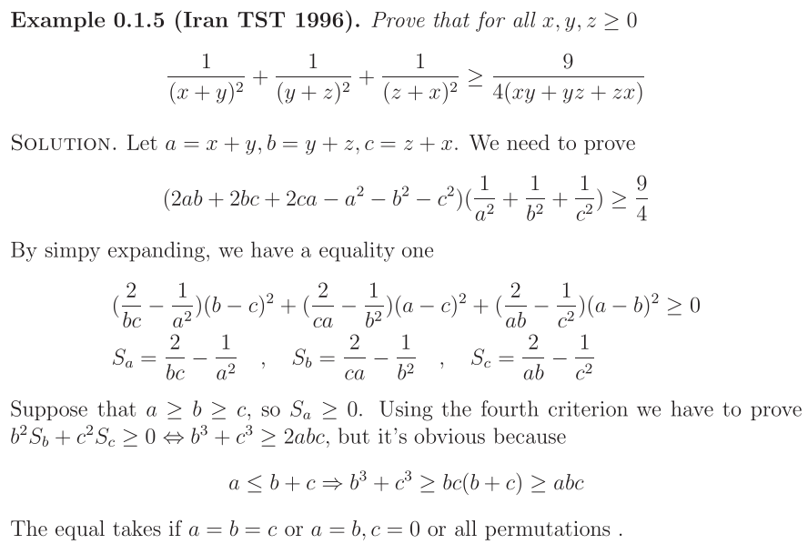

[不等式] SOS1_E.pdf中最后一例(伊朗96)中的问题
附件中的文档没记错的话是在mathlinks里早前讲sos方法的文档，刚才与何版主聊的时候何版主提到最后一例，有点莫名其妙，的确，那里跟前面列的几种情况中不同，而且即使所用的结论仍然正确但也少了些说明，这里扯一下。
 sos1_e.pdf (54.6 KB) sos1_e.pdf (54.6 KB)
下载次数: 10
2011-10-13 11:20
首先文档中前面提到：
(43.51 KB)
2011-10-13 11:20
后面的例子是这样写的：

(100.71 KB)
2011-10-13 11:20
很明显，后面这跟前面的结论不同，还好所用的结论还是成立的，这里简单扯一下。
事实上，我们有如下结论：
若 $S=S_{a}(b-c)^{2}+S_{b}(c-a)^{2}+S_{c}(a-b)^{2}$，当
\begin{align*}
&a\geqslant b\geqslant c\geqslant 0 \\
&S_{a}\geqslant 0, S_{b}\geqslant 0 \\
&b^{2}S_{c}+c^{2}S_{b}\geqslant 0
\end{align*}
那么有 $S\geqslant0$ 成立。
与原文对比，原文少了 $S_b\geqslant0$ 的证明，还好这是正确的因为由所设知 $a,b,c$ 是三角形三边，故易得 $S_b\geqslant \dfrac2{c(b+c)}-\dfrac1{b^2}=\dfrac{(2b+c)(b-c)}{b^2c(b+c)}\geqslant0$。
而至于上述结论的证明，这里用最简单的放缩方法，由 $b^{2}S_{c}+c^{2}S_{b}\geqslant 0$ 得 $S_{c}\geqslant -\dfrac{c^{2}S_{b}}{b^{2}}$，于是
\begin{align*}
S&\geqslant S_{b}(c-a)^{2}+S_{c}(a-b)^{2} \\
& \geqslant S_{b}(c-a)^{2}-\frac{c^{2}S_{b}}{b^{2}}(a-b)^{2} \\
& =\frac{a(b-c)(b(a-c)+c(a-b))S_{b}}{b^{2}} \\
& \geqslant 0
\end{align*}
在推的过程中还顺便得出了另一个类似的结论：
若 $S=S_{a}(b-c)^{2}+S_{b}(c-a)^{2}+S_{c}(a-b)^{2}$，当
\begin{align*}
&b+c\geqslant a\geqslant b\geqslant c\\
&S_{a}\geqslant 0, S_{b}\geqslant 0 \\
&b^{2}S_{b}+c^{2}S_{c}\geqslant 0
\end{align*}
那么有 $S\geqslant0$ 成立。
证明：由 $b+c\geqslant a\geqslant b\geqslant c$ 可得 $c(a-c)\geqslant b(a-b)\geqslant0$，于是
\begin{align*}
c^{2}S&= c^{2}S_{a}(b-c)^{2}+S_{b}(c(a-c))^{2}+c^{2}S_{c}(a-b)^{2} \\
& \geqslant S_{b}(b(a-b))^{2}+c^{2}S_{c}(a-b)^{2} \\
& \geqslant (b^{2}S_{b}+c^{2}S_{c})(a-b)^{2} \\
& \geqslant 0
\end{align*}
后面这个结论适用于三角形三边，而这两种结论对于该题都是适用的。
这类结论其实可以自己再推一些总结一些，不过我觉得，其实在实战中看具体情况具体分析去放缩更加实际一些，不等式始终是需要灵活玩的。
|
本主题由 kuing 于 2013-1-19 16:13 分类
 发表于 2011-10-13 11:20
发表于 2011-10-13 11:20

 发表于 2011-10-13 21:09
发表于 2011-10-13 21:09